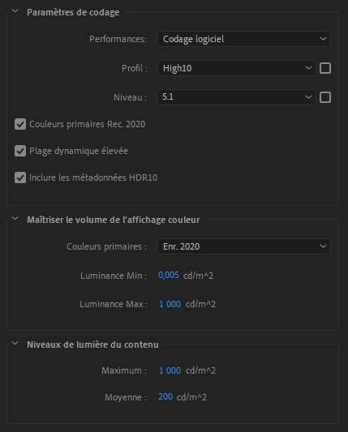
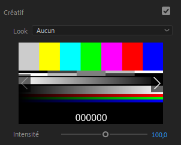

II.G - Color Management : Adobe Premiere and Media Encoder¶
The color management options are quite limited (almost non-existent) in Adobe Premiere, and it does not support OCIO*.
- There is no setting to set up the input color interpretation, which implies that all media (other than After Effects compositions) must use standard color spaces, and that an openEXR file will always be read as RGB Linear for example.
- There is no configurable workspace which is not mandatory when editing, as long as you don’t use too many effects.
- The choices are very limited on the output possibilities, everything is automatic. The output is necessarily done via Adobe Media Encoder.
H.1 - Output space¶
For the vast majority of formats, no setting is available.
Only for encoding in h.264 or h.265 / hevc is it possible to use Rec.2020, if and only if the high10 codec profile is selected.

- Primaries Colors Rec.2020: Encoding is done in Rec.709 if unchecked.
- High dynamic range allows 12-bit rendering instead of 10-bit (see I.K - Pixel Formats), which is also called HDR.
- *Include HDR10 Metadata unlocks the following options…
- Primaries Colors allows to change the primaries, and strangely enough, to choose the primaries of Display P3 or Rec.709 while the Rec.2020 box above must be checked, and are only available in HDR mode.
The other options are metadata specific to the HDR video format for display purposes.
H.2 - Applying LUT¶
It is however possible to apply a LUT on the clips, which remains a way to theoretically do everything, provided you have the adequate LUT, which is not always obvious…

You can find the option to add a LUT in the Lumetri effect or the panel of the same name.
You can also apply a LUT via Media Encoder.

The option to add a LUT can be found in the Effects tab of the output parameters.
H.3 - Workspace and display¶
It is important to know that the First sequences are always in Rec.709 during the editing; all the imported media are converted in Rec.709 and the effects, the editing is done in this color space.
By default, Premiere does not convert the colors back to the sRGB of the screen, they remain in Rec.709, which makes the colors look bad on standard sRGB screens (and even worse on P3 screens).
This also means that by default the colors of the same footage on After Effects and Premiere are rendered differently.
You can activate this missing conversion in the preferences, via the box Enable display color management, a useful option as soon as you don’t mount on a Rec.709 screen but sRGB or P3 (which is the majority of cases). This option only influences the display to automatically convert from Rec.709 of Premiere to the screen space; in any case, it doesn’t change anything to the final file output.
This option is also available in Media Encoder although it is less important: it only affects the display of previews.